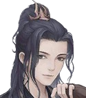
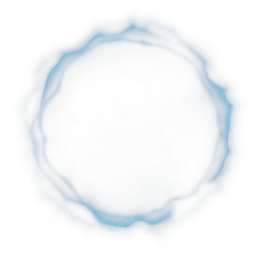
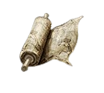
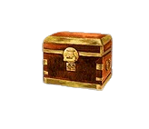
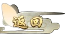
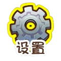

 
1000
修炼

功法
副本

背包
根骨:7
家境:5
悟性:2
机缘:2
魅力:3
体魄:1
剑气长城
战斗开始：你进入剑气长城，这里的妖气很重
第一回合：你发现了一只受伤的上古大妖，以你福气境三层的修为，你可以选择：
A. 直接用全力攻击。
B. 先观察其伤势寻找弱点再攻击。
第一回合选 A：你与大妖激烈对抗，虽凭借修为取胜但也受了轻伤，此时周围妖气更甚，你准备迎接新挑战。
第一回合选 B：你发现其腿部有伤，攻击其腿部后轻松将其击杀，然而其死亡引发了一阵灵力波动，似乎有其他东西被吸引过来。
第二回合：你遇到了一个神秘的洞穴，你可以选择：
C. 进入洞穴探索。
D. 绕过洞穴继续前进。
第二回合选 C：你在洞穴中发现了珍贵的宝物，但也惊动了守护宝物的怪物。
第二回合选 D：你继续前进，却发现前方的道路更加艰难。
第三回合：暂无内容
第四回合：暂无内容
第二回合：你遇到了一个神秘的洞穴，你可以选择：
C. 进入洞穴探索。
D. 绕过洞穴继续前进。
第二回合选 C：你在洞穴中发现了珍贵的宝物，但也惊动了守护宝物的怪物。
第二回合选 D：你继续前进，却发现前方的道路更加艰难。
第五回合：暂无内容
第六回合：暂无内容
第七回合：暂无内容
第八回合：暂无内容
第九回合：暂无内容
第十回合：暂无内容
第十一回合：暂无内容
第十二回合：暂无内容
第十三回合：暂无内容
第十四回合：暂无内容
第十五回合：暂无内容
第十六回合：暂无内容
继续
 